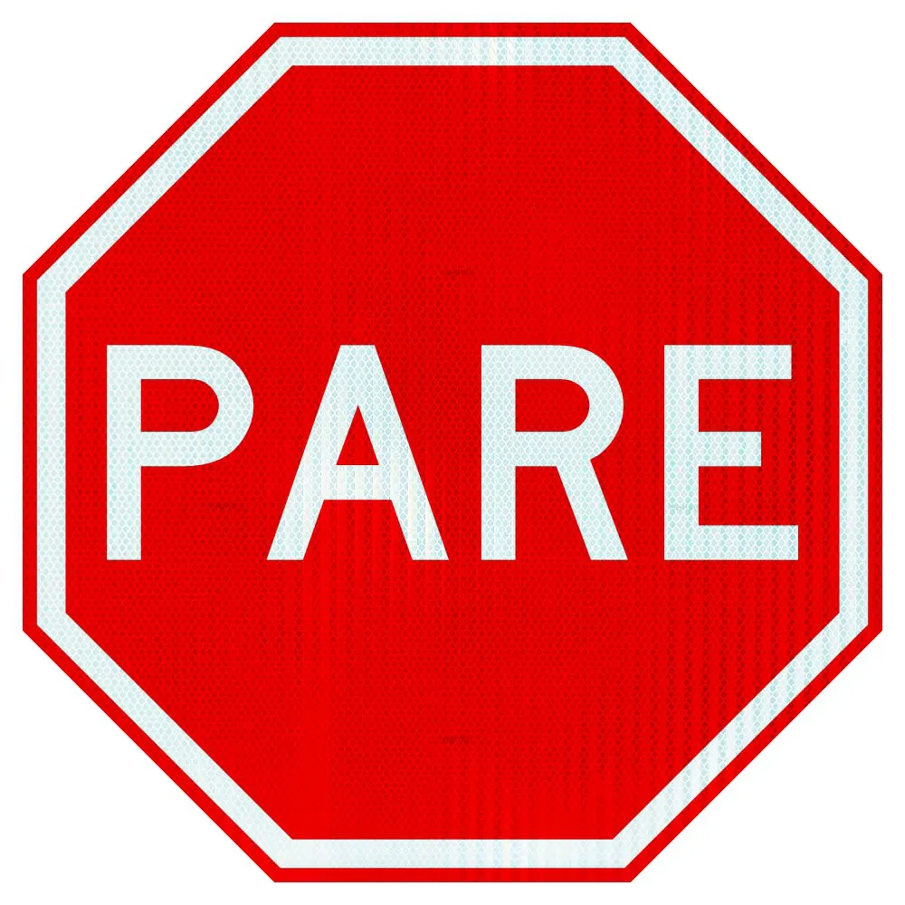
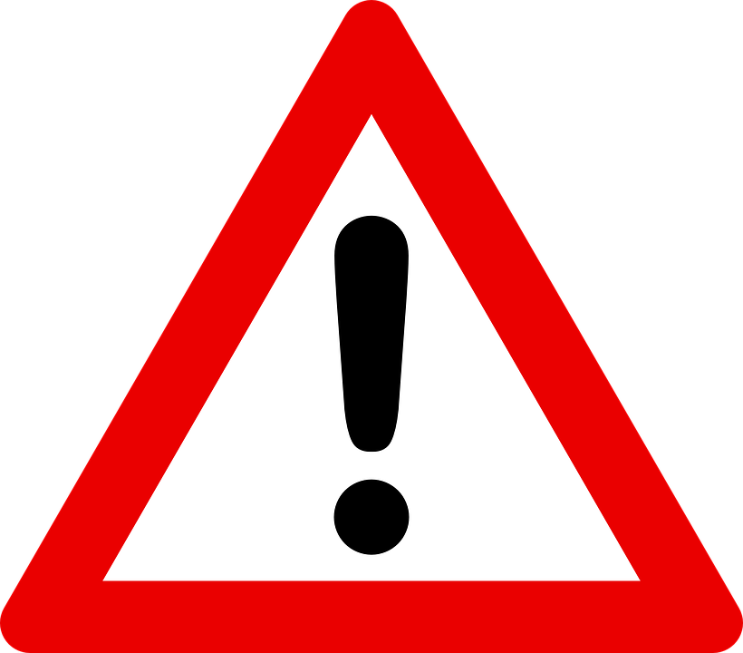
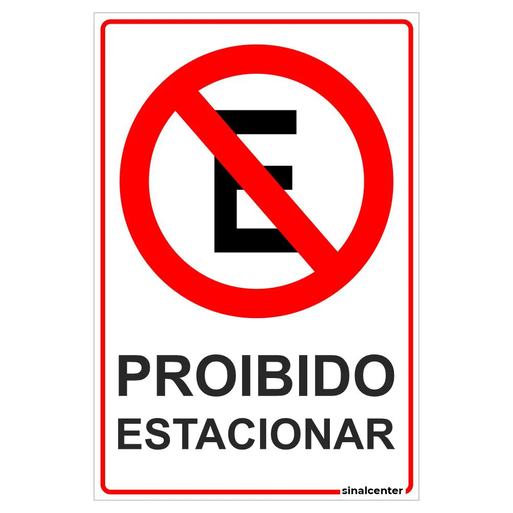

Minhas listas favoritas
5 Regras de bom comportamento
- Seja cortês com os outros.
- Respeite o espaço pessoal das pessoas.
- Escute atentamente quando alguém estiver falando.
- Seja pontual e cumpra seus compromissos.
- Trate os outros com empatia e compreensão.
Meus 5 emojis Favoritos 🙏
Algumas placas de transito e seus significados
- Placa que indica uma parada obrigatória

- Placa que indica atenção aos motoristas

- Placa que indica proibido estacionar

Livro: O Pequeno Príncipe
Capítulos
-
O Planeta do Pequeno Príncipe
- A chegada do Pequeno Príncipe à Terra
- A história da Rosa
- Os vulcões do Asteróide B-612
-
O Pequeno Príncipe e o Planeta dos Homens
- Conhecendo os adultos da Terra
- O encontro com o rei
- O encontro com o vaidoso
-
O Pequeno Príncipe e as Viagens Interplanetárias
- A visita ao planetinha do acendedor de lampiões
- O planeta do bêbado
-
O Pequeno Príncipe e o Planeta do Geógrafo
- O planeta do geógrafo
- A busca por conhecimento
-
O Pequeno Príncipe e o Planeta da Serpente
- O encontro com a serpente
- O fim da jornada